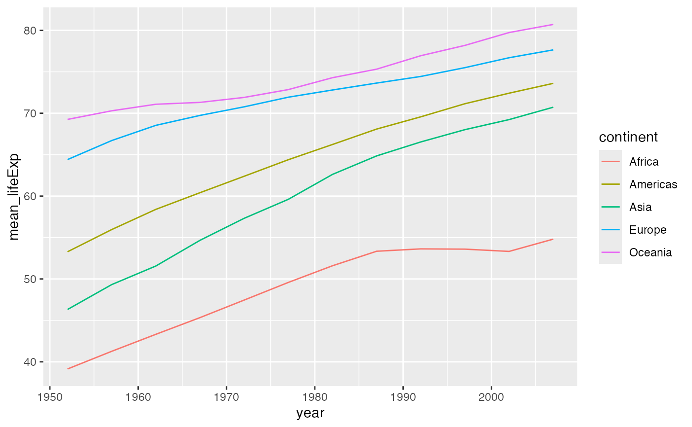

Gapminder continent–year aggregates
gm_trends.RdAggregated indicators by continent and year for trend plots and comparisons.
Usage
data(gm_trends)Format
A data frame with columns:
- continent
Continent (character).
- year
Calendar year (integer).
- mean_lifeExp
Mean life expectancy (numeric, years).
- mean_gdpPercap
Mean GDP per capita (numeric, international \$).
- pop_total
Total population (integer, persons).
Details
Created from gm_panel by grouping continent, year and computing:
mean_lifeExp: mean life expectancy,mean_gdpPercap: mean GDP per capita,pop_total: total population.
Examples
# Simple line plot with ggplot2 (if available)
if (exists("gm_trends") && requireNamespace("ggplot2", quietly = TRUE)) {
ggplot2::ggplot(gm_trends, ggplot2::aes(year, mean_lifeExp, colour = continent)) +
ggplot2::geom_line()
}
